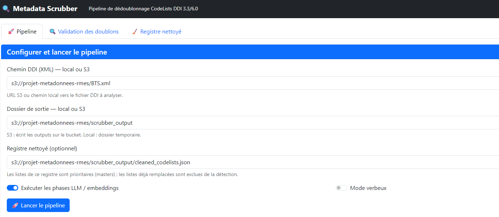
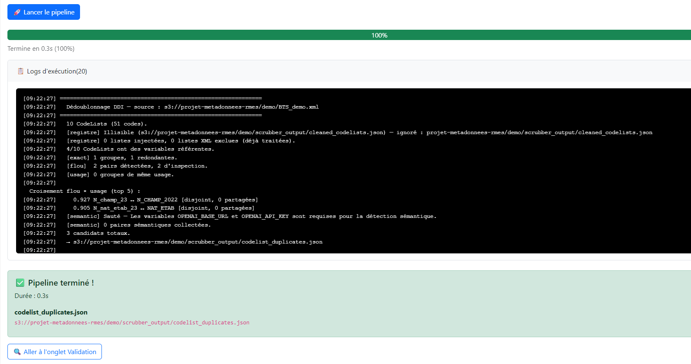
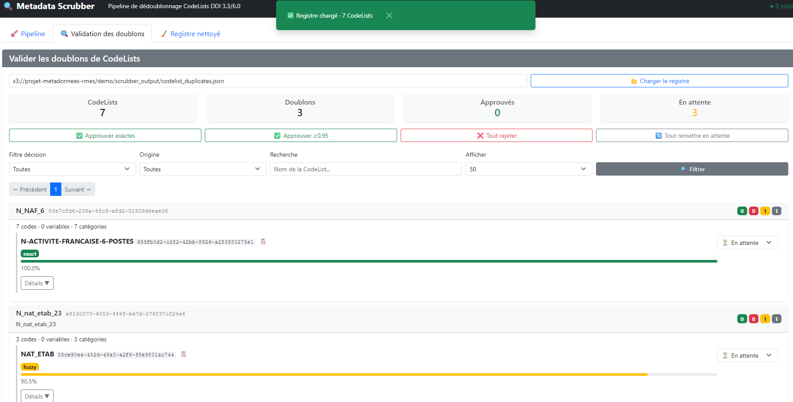
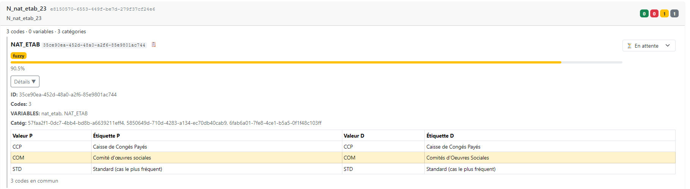
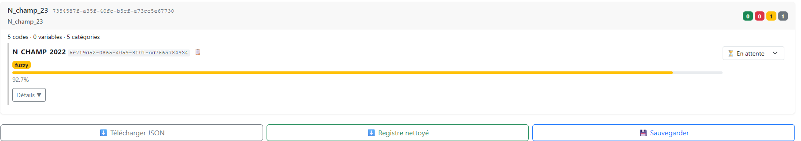
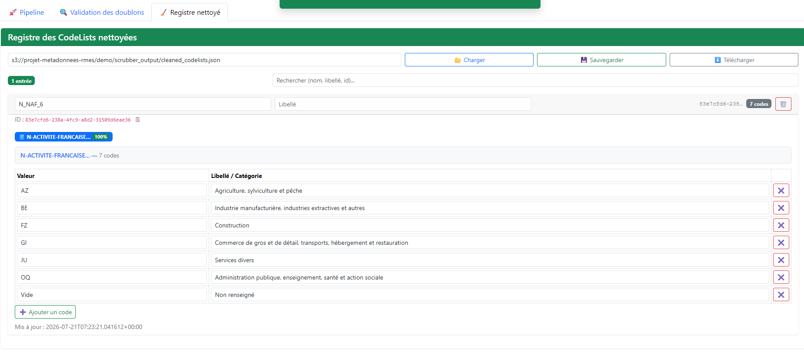

Guide d’Utilisation — Metadata Scrubber
1 Introduction
Le Metadata Scrubber est un outil qui identifie les listes de codes (CodeList) redondantes au sein d’un fichier de métadonnées au format DDI (Data Documentation Initiative). Il propose deux modes d’utilisation complémentaires :
- Exécution automatique — analyse le fichier XML DDI et génère un registre de paires de CodeLists détectées comme potentiellement redondantes.
- Interface de validation interactive — permet d’examiner chaque paire, prendre des décisions (consolider ou rejeter), et produire en sortie un registre épuré ne conservant qu’une CodeList maîtresse par groupe de redondances.
Ce document s’adresse à l’expert métier qui utilise l’interface web pour examiner les résultats et valider les rapprochements. La logique algorithmique du pipeline (entonnoir exact → flou → sémantique) est décrite en détail dans la note méthodologique (§ 8).
2 Prérequis
Le serveur du Metadata Scrubber doit être en cours d’exécution. Sur SSP Cloud / Onyxia, il est déployé sous le hostname metadata-scrubber.lab.sspcloud.fr avec un accès protégé par Basic Auth.
Au premier chargement, un formulaire de navigateur demande :
- Identifiant — votre nom d’utilisateur ou identifiant SSP Cloud
- Mot de passe — le mot de passe partagé fourni dans la configuration du projet
L’interface est également accessible en local après avoir lancé le serveur :
uv run scrubber-web, puis ouvrezhttp://localhost:8000.
3 Lancer le pipeline
Le premier onglet de l’interface (🚀 Pipeline) sert à configurer et lancer l’exécution automatique du dédoublonnage sur un fichier DDI.
3.1 Configurer le pipeline
Quatre champs paramètrent le run :
| Champ | Rôle |
|---|---|
| Chemin source DDI (XML) | URL S3 ou chemin local vers le fichier DDI à analyser. |
| Dossier de sortie | Emplacement où sera écrit le registre de doublons. |
| Registre nettoyé (optionnel) | Chemin vers un cleaned_codelists.json préexistant. Les CodeLists maîtres de ce registre sont injectées comme candidates prioritaires ; les doublons déjà validés sont exclus de la détection. |
| Exécuter les phases LLM / embeddings | Décocher pour un run rapide (exact + flou uniquement, sans embeddings ni juge LLM). |
| Mode verbeux | Afficher les détails d’exécution (étapes d’embeddings, messages LLM …) dans les logs. |

3.2 Exécuter le pipeline
Après avoir complété les champs, cliquez sur 🚀 Lancer le pipeline.
La barre de progression apparaît et avance en temps réel :
- Pourcentage : progression globale (0 % → 100 %)
- Texte de phase : indique l’étape en cours, par exemple
Phase 5/9 — Détection exacte - Logs d’exécution : panneau rétractable affichant la sortie détaillée du pipeline
Cliquez sur le bouton 📋 Logs d’exécution pour déplier le texte brut de l’exécution : timestamps, messages de chaque phase, noms des CodeLists traitées, résultats des comparaisons.

Temps d’exécution estimé : quelques secondes pour un petit fichier (< 500 Ko), 1–3 minutes pour un fichier standard. La phase LLM (embeddings + juge) peut ajouter plusieurs minutes supplémentaires.
3.3 Résultat
En fin d’exécution, une alerte verte affiche :
- Le nombre de CodeLists traitées
- Le nombre de paires de doublons détectées
- Le chemin du fichier produit
- Un bouton pour aller directement à l’onglet Validation des doublons
4 Examiner et valider les doublons
Le deuxième onglet (🔍 Validation des doublons) est au cœur du travail de l’expert. Il présente le registre des paires de CodeLists détectées comme potentiellement redondantes sous forme de cartes, avec des filtres, des actions par paire et des actions de masse.
4.1 Charger le registre
Si un pipeline n’a pas été lancé depuis l’interface, chargez un registre préexistant :
- Saisissez le chemin (S3 ou local) vers le fichier de sortie du pipeline, par exemple
s3://projet-metadonnees-rmes/scrubber_output/codelist_duplicates.json - Cliquez sur 📂 Charger le registre
- Les résultats s’affichent alors sous forme de cartes
4.2 Vue d’ensemble
Quatre indicateurs en haut de page résument l’état du registre :
| Indicateur | Signification |
|---|---|
| CodeLists | Nombre total de CodeLists dans le fichier analysé |
| Doublons | Nombre de CodeLists marquées comme potentiellement redondantes |
| Approuvés | Pairs pour lesquelles l’expert a validé le rapprochement |
| En attente | Paires n’ayant pas encore été examinées |
Chaque CodeList est présentée sous forme de carte comportant :
- Le nom de la CodeList et un bouton Voir à côté (pour la comparaison)
- Le nombre de codes
- Le score de confiance (0–100 %)
- Le badge de décision : 🟡 en attente, 🟢 approuvé, 🔴 rejeté
- Les signaux de détection : exact, flou, usage, synonyme, semantic (ces badges reflètent la phase du pipeline qui a produit la correspondance — synonyme n’est pas un signal séparé mais une manifestation du signal semantic (juge LLM) ; le détail des définitions est dans la note méthodologique, §2-3)
- Un bouton 📋 Détails affichant une liste
(valeur → libellé)pour chaque CodeList du groupe

4.3 Comparer côte à côte
Cliquez sur Voir (à côté du nom de la CodeList) pour ouvrir le panneau de comparaison en deux colonnes :
- Colonne gauche : la CodeList maître (la plus récente, ou celle retenue)
- Colonne droite : la CodeList candidate détectée comme redondante
- Lignes colorées : les lignes où les valeurs ou libellés diffèrent entre les deux listes (mise en évidence rouge)
- Les codes communs (valeur + libellé identiques) ne sont pas colorés

Cette vue permet de juger rapidement si la différence entre les deux listes est un simple artefact (casse, accent, ordre des codes) ou un changement réel de contenu.
4.4 Décisions par paire
Sous chaque paire de CodeLists, trois boutons permettent de prendre une décision :
- ✅ Approuver — les listes sont redondantes, la candidate doit être remplacée
- ❌ Rejeter — les listes sont distinctes, le rapprochement est incorrect
- 🔄 En attente — la décision est remise à plus tard (état par défaut)
Chaque changement de décision met à jour le badge coloré de la carte.
4.5 Actions de masse
Quatre boutons en haut de la page permettent d’appliquer des décisions à plusieurs paires simultanément :
| Bouton | Effet |
|---|---|
| ✅ Valider exactes | Applique Approuver à toutes les paires détectées par correspondance exacte (100 % de confiance automatique) |
| ✅ Valider ≥ 0.95 | Applique Approuver à toutes les paires avec un score de confiance supérieur ou égal à 95 % |
| ❌ Tout rejeter | Applique Rejeter à toutes les paires restées en attente |
| 🔄 Tout remettre en attente | Remet toutes les décisions en état En attente (permet de reprendre le parcours) |
4.6 Filtres
Pour se concentrer sur un sous-ensemble de CodeLists :
- Filtre décision : Toutes / En attente / Approuvés / Rejetés / Sans doublon
- Filtre origine : Toutes / Registre uniquement (uniquement les CodeLists qui sont des maîtres d’un registre existant)
- Recherche : champ texte — recherche par nom de la CodeList
- Afficher : 20 / 50 / 100 éléments par page
4.7 Sauvegarder les décisions
Après examen, cliquez sur 💾 sauvegarder. L’interface :
- Met à jour les états
decisiondans le registrecodelist_duplicates.json - Génère ou met à jour le registre nettoyé
cleaned_codelists.json
Une notification (toast) verte apparaît en confirmation :

Ce que la sauvegarde produit :
cleaned_codelists.jsonne contient que les CodeLists maîtres — celles qui ont été approuvées et celles marquées “sans doublon”. Chaque maître possède un champreplaces[]listant les CodeLists redondantes qu’il remplace. Ce fichier est un input pour les runs suivants (workflow itératif, § 6.2).
4.8 Ajouter une CodeList au registre
Lorsqu’une CodeList n’a aucun doublon détecté, l’expert peut décider tout de même de l’ajouter au registre épuré :
- Cliquez sur le bouton ➕ Ajouter au registre (en haut de la carte de la CodeList concernée, accessible via le bouton 📋 Détails ou dans la vue comparée)
- La CodeList apparaît alors comme maître dans le registre nettoyé
- La sauvegarde (💾 sauvegarder) écrit cette entrée dans
cleaned_codelists.json
À utiliser pour les CodeLists uniques mais importantes qu’on souhaite conserver comme référence dans le registre propre.
5 Registre nettoyé
Le troisième onglet (🧹 Registre nettoyé) permet de consulter, éditer et sauvegarder le registre épuré — la base de connaissances cumulée des CodeLists validées.
5.1 Charger le registre
- Saisissez le chemin vers le fichier
cleaned_codelists.json - Cliquez sur 📂 Charger
L’interface affiche alors la liste des CodeLists maîtres avec leurs remplaçants.

5.2 Contenu d’une entrée
Chaque carte de CodeList maître contient :
- Nom et label (libellé)
- Nombre de codes
- Codes : liste de paires
(valeur → libellé)dans un bloc copiable - Variables référentes : noms des variables DDI qui référencent cette CodeList
- Replace : badge indiquant le nombre de CodeLists redondantes remplacées (cliquable, affiche la liste détaillée des remplaçants — nom, type de détection, score de confiance)
5.3 Édition
Les champs Nom et Label de chaque entrée sont modifiables directement dans le navigateur. Les champs Codes et Variables sont en lecture seule.
Le dirty tracking est signalé par un badge orange en haut de la page : modifications non sauvegardées. Les modifications restent locales jusqu’au clic sur 💾 Sauvegarder.
5.4 Sauvegarder et télécharger
| Bouton | Effet |
|---|---|
| 💾 Sauvegarder | Écrit l’état actuel du registre vers le chemin S3 ou local spécifié |
| ⬇️ Télécharger | Télécharge le registre en tant que fichier JSON dans le navigateur |
Le bouton 📂 Charger permet de recharger le registre à tout moment (utile pour reprendre une session ou charger une version mise à jour).
6 Workflow de validation
Cette section décrit le parcours typique d’un expert, de l’exécution du pipeline à l’obtention d’un registre épuré, en passant par l’examen et la validation des paires détectées.
6.1 Un run complet
Le circuit se décompose en 5 étapes :
Exécuter le pipeline (§ 3) — configurez le chemin source et lancez le pipeline. Le résultat est un fichier de doublons.
Examiner les cartes (§ 4.1–4.2) — passez à l’onglet Validation, chargez le registre si nécessaire, et parcourez les cartes. Les cartes sont triées par nombre de codes par défaut, mais vous pouvez les filtrer par décision, origine ou recherche textuelle.
Comparer par paire (§ 4.3) — pour chaque paire douteuse, cliquez sur Voir pour comparer les deux CodeLists côte à côte. Les lignes colorées en rouge indiquent les différences de contenu.
Prendre des décisions (§ 4.4–4.5) — pour chaque paire, cliquez sur ✅ Approuver (les listes sont redondantes) ou ❌ Rejeter (les listes sont distinctes). Les actions de masse (§ 4.5) permettent de accélérer le traitement des paires à fort score de confiance.
Sauvegarder (§ 4.7) — une fois toutes les décisions prises (ou avant de reprendre plus tard), cliquez sur 💾 sauvegarder. Ceci met à jour le registre
codelist_duplicates.jsonet écrit le registre nettoyécleaned_codelists.json.
Bonnes pratiques : sauvegardez régulièrement, même partiellement. Un clic sur 💾 sauvegarder peut être fait à tout moment — les décisions validées sont conservées. Le bouton 🔄 Tout remettre en attente permet de reprendre le parcours depuis le début sans perdre les modifications intermédiaires.
6.2 Workflow itératif
Les runs successifs s’enrichissent mutuellement grâce au registre propre :
Step 1 — Analyser BTS
Pipeline → examiner → décider → sauvegarder
↓
cleaned_codelists.json = maîtres BTS + leurs replaces
Step 2 — Analyser BPE
Chemin source → BPE.xml
Registre nettoyé → cleaned_codelists.json (issu de BTS)
Pipeline → examiner → décider → sauvegarder
↓
cleaned_codelists.json = maîtres BTS + maîtres BPE + leurs replacesPourquoi c’est utile :
- Les doublons déjà validés (ex.
N_NAF_6) sont exclus de la détection : on ne les redécouvre pas dans des runs ultérieurs. - Les nouveaux doublons sont détectés par rapport aux maîtres cumulés : une CodeList BPE peut être reconnue comme doublon d’une CodeList BTS, même si aucune des deux ne figure dans le même fichier.
- Le registre propre croît à chaque run et constitue une référence transversale sur tout le projet.
Dans l’interface : saisissez simplement le chemin cleaned_codelists.json dans le champ Registre nettoyé de l’onglet Pipeline avant de lancer le nouveau run.
6.3 Ajouter des listes sans doublon
Lorsqu’une CodeList n’est détectée comme doublon de personne par le pipeline (ex. L_QUALITE_ZONAGE_2023 dans l’exemple BPE_demo), vous pouvez la ajouter manuellement au registre propre :
- Consultez la CodeList dans l’onglet Validation (ou via son détail)
- Cliquez sur ➕ Ajouter au registre
- Sauvegardez (💾 sauvegarder) — la liste apparaît dans
cleaned_codelists.jsoncomme maître sans remplaçant.
Cette fonctionnalité est particulièrement utile pour les CodeLists uniques mais essentielles, ou lorsque vous souhaitez créer une référence maître pour un nouveau concept métier avant d’identifier ses variantes.
7 Astuces pratiques
Run rapide (prototype) — décochez Exécuter les phases LLM / embeddings pour un run 5 à 10 × plus rapide. Le pipeline se contente des phases exacte et floue ; la phase sémantique (embeddings + juge LLM) est omise.
Sauvegarder régulièrement — les décisions ne sont pas persistées automatiquement. Un clic sur 💾 sauvegarder est nécessaire après chaque session de travail pour que les décisions et le registre propre soient écrits.
Reprendre une session — recharger le registre avec 📂 Charger (onglet Validation ou Registre nettoyé) restaure les décisions précédentes. Tout est conservé dans le fichier JSON.
Documentation API automatique — la documentation OpenAPI complète de l’API REST est disponible à l’URL /docs (Swagger UI) et /redoc. Elle liste tous les endpoints, leurs paramètres et leurs réponses.
8 Note méthodologique
Un entonnoir en trois niveaux — exact (signature identique) → flou (Similarity ≥ 0.90) → sémantique (embeddings + juge LLM) — permet de couvrir la majorité des formes de redondance :
| Forme de redondance | Signal qui la détecte |
|---|---|
| Copies conformes | exact |
| Variantes mineures (casse, accents, ordre) | flou |
| Synonymes conceptuels | sémantique (badge synonyme ou semantic, même mécanisme LLM) |
Ces trois niveaux sont strictement hiérarchiques (un candidat n’est traité qu’une fois, par le premier niveau qui le détecte). Le signal d’usage (var_sig — variables qui référencent les CodeLists) et les doublons cross-opération ne sont pas un quatrième niveau de l’entonnoir : ce sont deux mécanismes transversaux, qui s’appliquent en plus des trois niveaux et pas à une étape fixe du pipeline. var_sig vient renforcer ou nuancer n’importe lequel des trois niveaux (voir note méthodologique, §3), et les doublons cross-opération sont simplement des doublons exacts, flous ou sémantiques détectés entre deux exécutions successives du pipeline grâce au registre propre (cleaned_codelists.json), et non une catégorie de redondance à part.
Le registre propre (cleaned_codelists.json) complète cette approche pour obtenir un dédoublonnage transversal, cumulatif et reproductible.
Pour le détail complet de l’algorithme et des résultats sur BTS.xml (156 CodeLists, 29 groupes de doublons, 54 CodeLists redondantes), consultez la note méthodologique. (source : note méthodologique, § 2).